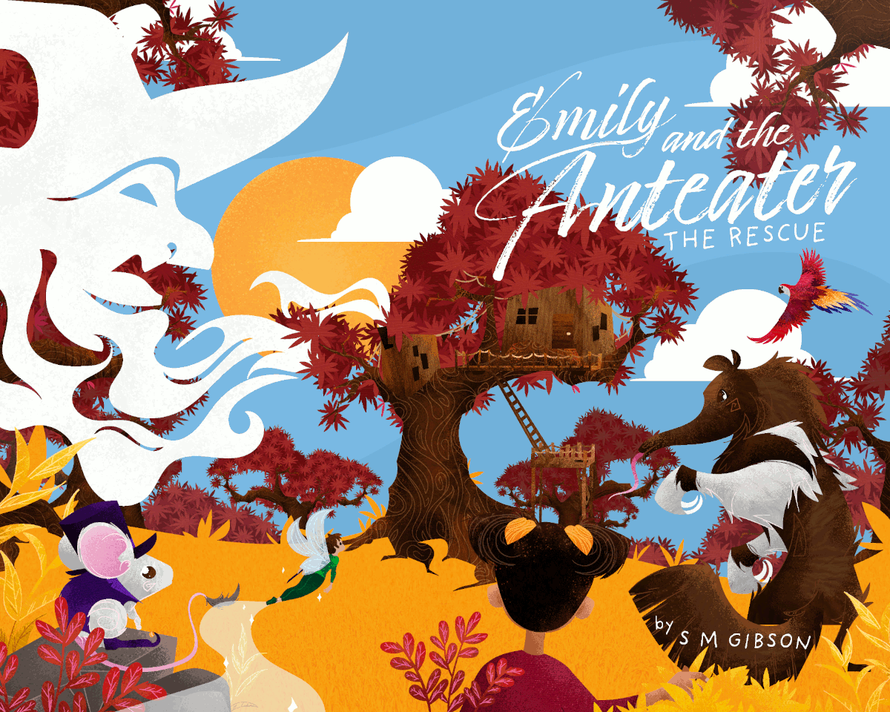
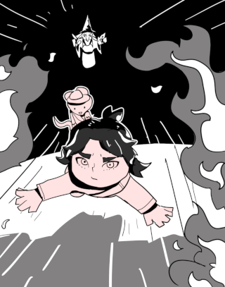
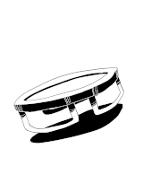
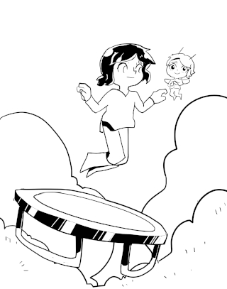

"This is the perfect book to read, or have read, before going to bed. The chapters are just the right length to be a great way to wind down at the end of the day with an enjoyable, light-hearted story."
Samantha J.
Emily and the Anteater - The Rescue
S. M. Gibson
One sunny day, Emily is bouncing on her trampoline. She starts to fly and meets a fairy. They have a peanut butter sandwich picnic. Along comes Penelope the anteater. Her brother has been kidnapped by an evil witch. Can Emily help Penelope save her brother from the evil witch?
Emily is out playing one day, bouncing on her trampoline when she starts to fly. She meets a fairy and an amazing adventure begins.
"I think I hear something coming up the stairs," Aloysius called out. "Did we shut the door?"
"No, we didn't," said Emily.
"It is coming up the stairs," said Pengi as she flew off to hide behind a potted plant.
Emily picked up another mirror and pointed them both at the doorway that led down to the chamber of magical treasures. She, too, could now hear the footsteps. Emily closed her eyes and took a deep breath. She wasn't sure why she took a deep breath, but somehow it made her feel better.
Get your copy today at Kindle on Amazon.
Emily and the Anteater - The Rescue
Chapter 1
One Sunny Day
Emily’s eyes flashed open widely as she just missed flying into a fairy.
"Good morning, Emily," beamed the fairy in a cheerful voice as Emily quickly dived to one side in surprise.
Emily wobbled in mid-air. Flying was new to her, and she had been enjoying the freedom and the rush of air through her hair. Her mind raced round and round trying to work out what was going on. She had never met a fairy before and this one knew her name for some random reason. It was too much for her – she lost concentration and suddenly felt herself plummeting rapidly towards the ground.
The fairy gave an elegant flick of her wand and Emily stopped falling. Hovering high above the ground, Emily looked up as the tiny figure flitted gracefully towards her.
The fairy hovered in front of Emily and she stared at the miraculous creature with her mouth wide open. She noticed that the fairy had dainty little wings that curved up over her shoulders. The fairy was wearing a marvellous emerald green jacket that sparkled elegantly. In one hand, she held a slender wand topped with a gorgeous purple crystal that glinted in the sunlight. Her face was radiant, and her eyes glowed with warmth. She looked beautiful if very, very small. The fairy laughed and Emily felt herself relax.
"Hi, I am Roselle," said the little creature.
"Um. Hi. Nice to meet you," replied Emily. There was a pause. "How do you know my name?"
Roselle smiled and looked Emily in the eye.
"I am a fairy. We know things like that," said Roselle. "I have been looking for you."
"What? Um, why?" asked Emily, feeling very confused.
"Come with me. There are some creatures I want you to meet. It is a beautiful morning for flying," replied Roselle as she dipped her wings and made an elegant mid-air pirouette.
There was a long pause before Emily replied, "OK."
It had been an ordinary Saturday morning. Emily had woken up, eaten breakfast with her Mum and Dad, and then after brushing her teeth, gone outside to play.
Down at the bottom of the garden she bounced on the trampoline while her dog, Mandrake, ran around chasing butterflies.
Emily was daydreaming when all of a sudden, she felt herself start to rise into the air. Each bounce took her higher and higher, until Mandrake was just a tiny speck on the ground, her barks barely reaching Emily’s ears.
She flew round and round learning to control her flight. It was awesome being able to fly. Everything looked so beautiful and she had never felt so free.
Emily gazed at Roselle as the fairy flew slowly away. Emily wasn’t sure what to do next. Her parents told her never to go anywhere with strangers, but Emily assumed that didn’t include fairies. Her mind whirled around and around and, after weighing all the options for three quarters of a second, she flew after Roselle.
Roselle was heading in the direction of some snow-capped mountains that glistened in the sun, far off in the distance. It was a challenge keeping up with the swift flying fairy. Emily had so many questions to ask, but every time she got close enough to Roselle to speak, the fairy sped up. Emily gazed down at the forest far below her. It was vast and spread in all directions, a beautiful green carpet woven of every shade and hue imaginable. In the distance, she saw a river snake its way through the foliage.
They turned and headed for a bend in the river. Emily shook her dark hair away from her eyes and concentrated on following the fairy. Her stomach rumbled loudly.
Roselle turned to her and, flying backwards, said with a laugh, "Hungry? Yes, it is just about time for some morning tea."
"Morning tea sounds lovely," replied Emily. "Is there a cafe nearby?"
"We are very far from shops here. But don’t worry. I have something better in mind," said Roselle.
Emily wondered what that was. Her stomach grumbled again. Below them, Emily noticed a field amongst the trees. There were hundreds of blue, pink, and white flowers growing in soft-looking grass. Small shrubs nestled up against the edge of the forest.
Roselle made a little turn and then dived down towards the field. Along one edge of the space, a stream flowed lazily towards the river. The water sparkled in the warm sunlight. Emily followed Roselle as she flew towards the water’s edge. As she came closer, she could make out a picnic laid out on a silver rug. It looked like the most idyllic place to stop for morning tea.
Seconds before she crashed into the picnic, Emily realised she had never landed before. She leaned forward, aiming at the feast laid out below her. Gathering speed, she was coming in dangerously fast. At the last moment she pulled up, narrowly avoiding the picnic, and looped back up into the air!
Roselle flew over with a mischievous grin on her face.
"First time flying?" asked the fairy.
"Of course!" replied Emily gruffly. "How do I land?"
"Ah, flit from side-to-side like a butterfly. That is the easiest way. Otherwise, you can slow at the last minute running as you land. That is quicker."
Emily nodded and decided to go for a butterfly landing. That sounded much more elegant. She flitted left and right and came to a gentle landing next to the picnic rug. Landing was easier than she had feared. She gave a smile. Being able to fly was fun.
Emily sat down next to Roselle who was pouring out some orange juice into a dainty porcelain teacup. Roselle gestured to it and the food in front of them.
"Help yourself," said Roselle.
Emily hesitated, but her hunger got the better of her. She picked up a sandwich – peanut butter. Her favourite. She nibbled ravenously. Looking at Roselle, she asked, "Where are we? Why am I here?"
Roselle nodded. "Welcome to the world of Cyathan. We haven’t had a visitor from your world for a very, very long time."
"You mean this isn’t my world?" asked Emily. "How do I get home?"
"Oh, it is easy, just find an alignment. I can guide you. Our people visit your world from time to time," replied Roselle. "But first we need your help."
Emily tried to make sense of what the fairy said, but she couldn’t. She was just about to ask Roselle what she meant when there was a noise in the underbrush. Emily jumped and turned as something long and shaggy came rambling out of the thick green foliage. It looked strange but almost cuddly, with a long curved snout, thick fur, and sharp claws as it rambled towards them. The sharp claws frightened Emily and she searched for an escape route.
Roselle laughed and said, "Don’t worry, that is just Penelope. Have you never seen an anteater before?"
That is the end of Chapter One.
Get your copy today at Kindle on Amazon.